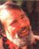
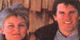
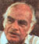
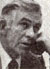
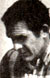
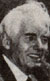
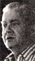
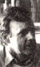
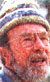

Quotes and quips from our most insightful interviews
Since the feature debuted in issue 2, MOTHER's interviews have offered insights into the wisdom and actions of some of America's (and the world's) most intriguing individuals. Many of these-such as Jacques Cousteau, R. Buckminster Fuller, and Isaac Asimov-were public figures when they were interviewed. Others-experts in such subjects as weather, energy, and farming-might, at the time, have been known only to their peers. Still others-like Bonnie Hill, a backwoods-Oregon schoolteacher and mother who successfully challenged the herbicide-spraying practices of large chemical and forestry industries-have shown us how one person can make a positive contribution to the lives of many.
Now, we're pleased to present a selection (there simply wasn't space for all) of our favorite quotes from the 98 interviews we've published since March of 1970. One of the things that impressed us while reviewing this wealth of wisdom was that-no matter how different their walks of life-these remarkable men and women all shared a great love for humanity and for the fragile planet that nourishes us all.
JOHN SHUTTLEWORTH (founder of THE Mother Earth News)
Everybody feels somebody else has got control of their lives. It seems everyone wants a feeling they can control their own destiny. That's what we're offering: You can do things for yourself. (No. 2, March/April 1970)
DR.BILL MOLLISON (environmental scientist, father of permaculture farming)
You know, a lot of modem thought suggests that the planet-as a living organism-seeks to protect itself by rejecting any spe cies that causes it harm. For instance, if cattle damage part of the earth, the harmed region will respond by growing thorn bushes and poisonous plants, thus rejecting the animals. Well, I think we, the members of the human race, are perilously close to being rejected by earth in that same way-and quite rightly so, since we've created some terrible damage. (No. 66, November/December 1980)
EDWARD ABBEY (environmentalist, writer)
A true civilization, for me, embraces toler ance as one of its cardinal virtues: tolerance for free speech and difference of opinion among humans, and tolerance for other forms of life-bugs and plants and crocodiles and gorillas and coyotes and grizzly bears and eagles and all the other voiceless, de fenseless things everywhere that are in our charge. Any true civilization must provide for those other life-forms. And the only way to do that is to set aside extensive areas of the earth where humans don't interfere, where humans rarely even set foot. (No. 87, May/June 1984)
The late EUELL GIBBONS (author, wild-foods expert)
Nature is typified by cooperation and mutualism. The evidence is everywhere. The production of fruit by trees and the scattering of seed by animals is one example. The interrelationships of flowers and bees are another. There are thousands and thousands of examples of mutual aid-even of one life-form being absolutely dependent on another. I find that the "fittest" is very often the life-form which has best learned to cooperate with other life-forms.
We have to learn what our role is, and there's no easy way to do it, no rule of thumb by which a person can run his life. We have to search for the way, and that requires application, study, and experience. We can shorten the process a lot by helping one another, passing on what's discovered. But that's like giving a map to somebody-he or she still has to take the journey. (No. 15, May/June 1972)
ROLLING THUNDER (Native American intertribal medicine man)
What puzzles me about pollution is this: I can understand why-in the early days-white people felt they had to exterminate the Indians, because they wanted to own the land. But I can't understand why white men and women continue to harm their own people by dumping harmful chemicals in the water and spraying deadly poisons in the air. It just doesn't seem to make sense that they would want to kill themselves. (No. 70, July/ August 1981)
PEGGY and JOHN McMAHON (owners of Mothering magazine)
PEGGY: If you and I were friends or lovers, and we were having a fight and you did something I didn't like, it wouldn't be appropriate for me to whack you. If we were in a restaurant and you spilled your drink, I wouldn't slap you and tell you to leave the room. Applied to any other type of relationship, the things we do to kids would be ludicrous.
Raise your child as you would have liked to be raised. Relate to him or her as another person, a human being. Recognize the significance of what we implant in our children's minds-
JOHN:-and how valuable that time in their younger years is in forming the rest of their lives. And every day, in every activity with them, try to be conscious that you're planting the seeds for creating an extraordinary person.
PEGGY: The search for peace is not something that has to take place outside of your own home and your own life. You can't talk about saving the world until you can save your own family. (No.95, September/ October 1985)
The late JOHN HOLT (teacher, author, promoter of alternative education)
I've come to believe that people's education is as much their private business as is their religion or politics. Let me just say that most of what I know I didn't learn in school, or in what people call "learning situations." I don't owe anything to formal education for my love of language, reading, and music. I had those interests before I went to school. In fact, I lost a lot of them while I was in such institutions, and I've managed to get them back since.
Most all youngsters are-by nature-smart, curious, and eager to learn. In fact-as I pointed out in my second book, How Children Learn- babies are such active, skillful seekers of knowledge that they learn more in the first five years of their lives than most older folks ever do in ten! (No. 64, July/August 1980)
The pesticide treadmill is a long walk. (Dr. R. Van Den Bosch)
A. P. THOMSON (agricultural researcher, organic farmer)
That should be everyone's first priority: to use a piece of ground-even if it's no more than a tiny backyard garden or an apartment windowbox-to grow at least some of his or her food without using poisonous chemicals. It isn't difficult to do so-all it requires is commitment. In fact, I think the essence of holistic agriculture was well summarized by old Confucius, who said that the best fertilizer on any farm is the footsteps of the farmer. (No. 67, January/February 1981)
MASANOBU FUKUOKA (experimental organic farmer, author)
By living a natural lifestyle and demonstrating its usefulness in this day and age, I feel I am serving humankind. As the steward of my rice fields, I am making my stand against the need to use destructive technology or eliminate other forms of life. After all, the problems of our time are ones all of us must face in our own hearts and deeds. As I see it, the ultimate goal of natural farming is not the growing of crops-but the cultivation and perfection of human beings. (No. 76, July/August 1982)
FRANCES MOORE LAPPE (author, founder of the Institute for Food and Development Policy)
At the institute, we've concluded that U.S. foreign assistance fails to help the poor because it's based on two fundamental fallacies. The first is the belief that it's possible to go through the powerful to reach the powerless. The second is that U.S. government aid can't be separated from the military and economic strategies of U.S. policymakers. The sad truth is that we often use our aid to support repressive Third World regimes solely because they are our political allies.
For instance, during the five years after President Ferdinand Marcos of the Philippines declared martial law in 1972, our aid to that country increased fivefold. It's now the sixth largest recipient of U.S. development assistance, yet-as I pointed out earlier-it has the worst-fed people in all of Asia. [ EDITOR'S NOTE: Recent news events, which have revealed the extent of the Marcoses' greed, have shown in part why this is so.]
For the past two years, though, I've been focusing primarily on the situation within the U.S., because the same repressive patterns of economic control-and the same increase in exports by corporations with no accountability or loyalty to the well-being of the people of their country-that are crippling the Third World are at work here, too! Indeed, that's one big reason why we shouldn't feel deadened by guilt about the plight of the hungry of the world. Those people aren't our enemies-we're all victims of the same economic forces.
Look at farming. A mere 5% of our landowners-many of them absentee owners- now possess almost half of our nation's farmland. The profit margin from crops is so thin (by 1979 real profits per acre had sunk to half what they were in 1945) that the only thing for farmers to do is, as Earl Butz put it, "get big or get out." And the key to getting big is to first own a lot of that valuable land. As agricultural economist Donald Paarlberg said, "We are developing a wealthy hereditary landowning class, which is contrary to American traditions." (No. 74, March/April 1982)
DR. ROBERT VAN DEN BOSCH (former professor of entomology and chairman of the Division of Biological Control at the University of California at Berkeley)
Farmers are forced to use more and more insecticides every year-and pay higher and higher prices for those substances-while the natural processes of species resurgence and immunity backlash actually build up insect populations rather than destroy them. This sort of "unwinnable war" is a result of our rather silly attempts to control the more than sextillion reproductively prolific creatures-among the world's million and a half insect species-with single-minded Buck Rogers methods. The pesticide treadmill is a long, expensive walk-one which can never make any real progress. (No. 58, July/August 1979)
JIM McHALE (farmer, former secretary of agriculture and special coordinator for rural planning and development for the state of Pennsylvania)
The family farmer today is the last holdout against a complete corporate takeover of our lives. If the family farmer isn't saved, the people will no longer own the land, will no longer control their food supplies, and will, therefore, no longer control their destiny.
Rural America has become decapitalized and depopulated during the past few decades. It's dying out there. And when it's finally dead, we're all going to die, too. Or, at the very least, our most precious possession-freedom-is going to die. (No. 43, January/February 1977)
KARL HESS (author, welder, former Republican Party speech writer)
Small-scale organization of all human activities is the inevitable wave of the future.
All our current institutions-government, business, social-are like dinosaurs. They've grown and grown until they're so ponderous and unwieldy and bogged down in bureaucratic paper shuffling they can't even fulfill the simplest tasks. And, like dinosaurs, as long as the climate is favorable, they'll keep on dominating the landscape and growing.
But the climate is changing in this country and changing fast. When the real crunch comes, the dinosaurs won't be able to adapt-they'll die of their own ponderous inertia. And their place will be taken by small-scale organizations made up of people with a sense of individual responsibility, because such organizations and such people will be versatile enough to adapt. (No. 37, January/ February 1976)
The late FRANK HERBERT (science fiction author)
I wrote The Saratoga Barrier with the hope that half the book's readers would end up saying, "Oh boy, what a nifty society-I'd like to live there," and the other half saying, "You wouldn't catch me dead in that place." The underlying message, then, was that one person's utopia is another person's dystopia-or worst possible world-and that any attempt to create a perfect society will fall into the trap of replenishing itself only from itself, and ignoring those differences between people that give us strength as human beings.
The people I distrust most are those who want to improve our lives but have only one course of action. (No. 69, May/June 1981)
BONNIE HILL (schoolteacher, successful herbicide opponent)
When people become interested in environmental issues and find out that things don't always work the way we've been raised to believe they should, it's easy for them to feel angry and frustrated. And since such problems can often affect the health of ourselves and our children, they're bound to play on the emotions. But I think that those who are involved in this sort of struggle need to be really careful about when and where they choose to vent their emotions. One of the favorite strategies of propesticide/proherbicide people is to accuse their opponents of being emotional and hysterical.
Now anger and outrage are genuine feelings, and I'm not suggesting that people try to squelch them. What I am saying is that maybe some places are better suited to that expression than others. If you're in a public situation and are trying to convince people that [a] there's a problem and [b] they should do something about it, I think it's best to provide whatever facts you can and to stay as rational and as calm as possible. To me, doing so makes all the difference in the world. (No. 72, November/December 1981)
JOHN GOFMAN, Ph.D., M.D. (physician, chemist, former Atomic Energy Commission employee)
Because of nuclear power, everyone in the entire U.S. population is functioning as a guinea pig in a dangerous experiment-and worse yet, we're being lied to about the fact that we are being made guinea pigs.
You keep repeating that solving the problem of human coercion will be difficult. Of course it will be! But to my way of thinking, it's the most important issue in the world. Just stop for a minute and ask yourselves: Can you, I, or anyone justify directing all our efforts toward solving trivial problems-just because the one we really need to face is difficult? (No. 68, March/ April 1981)
FRANK FORD (organic farmer, author, publisher, owner of Arrowhead Mills)
I don't think the natural-foods movement is over the hill at all. In fact, I think it's just coming into its own. The rest of the country is finally beginning to realize that we have to conserve our resources and utilize them correctly, that whole foods are best, and that natural growing methods are really the most efficient. (No. 29, September/ October 1974)
DR. PAUL MacCREADY JR. (human-powered-vehicle enthusiast, designer of the Gossamer Albatross, Gossamer Penguin, and Solar Challenger experimental aircraft, founder of AeroVironment, Inc.)
Your grandchildren will likely find it incredible- or even sinful-that you burned up a gallon of gasoline to fetch a pack of cigarettes! (No. 71, September/October 1981)
DAVID BROWER (founder of Friends of the Earth)
PLOWBOY: I doubt that we'll ever do it. I mean, do you really think that the general public will give up anything for some nebulous concept called "ecology"? Unless, of course, we just run head-on into catastrophe and have no other choice?
BROWER: I think they will. I believe that the average guy in the street will give up a great deal if he really understands the cost of not giving it up. And, remember, I'm talking about lowering the standard of use rather than lowering the standard of living. In fact, we may find that, while we're drastically cutting our energy consumption, we're actually raising our standard of living. (No. 21, May/June 1973)
AMORY LOVINS (energy consultant)
PLOWBOY: I take it, then, you feel nuclear power in the U.S. is facing some rough times ahead.
LOVINS: Oh, it's dead. It's dead.
PLOWBOY: You mean it's finished, as of right now, late 1977?
LOVINS: It's dead in the sense of a brontosaurus that's had its spinal cord cut and-because it's so enormous and has all these ganglia near the tail-can keep thrashing around awhile, not knowing it's dead yet. Two things killed it: One was basic economics. The nuclear industry has only survived so far because it's been assiduously nourished by various subsidies and bailouts. Those are gradually coming to an end. The other thing that killed it was its own zealous promotion; those doing it never quite understood the gist of Dick Crossman's first rule of successful propaganda-namely, that the basis for it is truth. (No. 48, November/December 1977)
LOVINS: Since 1979, the United States has actually gotten more than a hundred times as much new energy from energy conservation on the part of its users as it did from all net expansion of supply.
If anybody had said a few years ago that by now there would be a million solar homes in this country, and that orders of electricity from small hydro and wind power would be outpacing those from coal and nuclear plants, we would have thought that was wildly optimistic.
The revolution has already happened. (No. 88, July/August 1984)
We need not worship our limitations (Norman Cousins)
LESTER R. BROWN (author, agriculturist, economist, administrator, founder and president of the Worldwatch Institute)
In looking ahead over the long term, I think I can say with some confidence that the final quarter of this century will not be a simple extrapolation of the third quarter, in the way that the sixties were an extrapolation of the fifties. Whether we like it or not, we're about to undergo a period of rapid, far-reaching, perhaps traumatic change. We'll see changes in lifestyles, land ownership patterns, family size, educational systems, the media, the transport sector, eating habits-virtually every aspect of our lives will undergo adjustment. Perhaps radical adjustment.
I think the adjustment has already begun. People are driving smaller cars now. In some circles, the bicycle has become a symbol of enlightenment, and parents with more than two children are viewed as socially irresponsible. People are back-fitting their homes with wood-burning stoves. Backyard and community gardens are becoming commonplace. People are growing tomatoes.
The question, in short, is not, Will we accommodate human needs and numbers to the planet's finite resources? We will. The question is, Will we make the accommodation in a systematic, orderly fashion-or in a chaotic and catastrophic fashion?
It's easy to get discouraged, of course-but I think it's worthwhile to keep in mind that old Chinese greeting: "May you live in interesting times." (No. 50, March/ April 1978)
[EDITOR'S NOTE: Mr. Brown will be the subject of our interview in MOTHER NO. 101.]
NORMAN COUSINS (humanitarian, author)
What is most important is the quest for perfection. We are not perfect. We may never be perfect. But I think that the desire to become better in every respect has not just anthropological but philosophical and political implications. Such a philosophy was probably what was most significant about the young men who founded this country-the notion that we can be less imperfect than we are right now. We need not worship our limitations. (No. 90, November/December 1984)
GIL FRIEND (one of the founders of the Institute for Local Self-Reliance)
The best way, always, to convince people about anything is to simply quit talking and begin doing something tangible. (No. 36, November/December 1975)
The late DR. E. F. SCHUMACHER (economist, author of Small Is Beautiful: Economics As If People Mattered)
There's no doubt that our neglect of the spiritual aspects of life in favor of the deification of material goods has eaten into our very substance. By so single-mindedly cultivating an ever-expanding greed and envy, we have debased ourselves. We have made our lives far less than they could be. We have destroyed our intelligence, happiness, and serenity.
A clever chap has asked, "If one of our ancestors visited us today, what would he find more astonishing: the skill of our dentists-or the rottenness of our teeth?" In stead of solving this very personal problem in the gentle way with proper diet and other good habits, you see, we choose to live with ever-more-rotten teeth and the greater and greater skill of our dentists. We even pride ourselves on this decision.
But the world doesn't need for us to develop greater skill in handling problems that our heedlessness has created in the first place. The world would be much better off if we'd just develop the use of TLC-tender loving care-in everything we do.
I am not suggesting that we stand society on its head. That would be violent in itself. I'm talking about turning our thinking around gently, bit by bit, bit by bit-until one day we wake up and say, "Goodness. Look how satisfying and fulfilling life has become. How did we ever survive that period when we thought we needed so much?"
We have, you see, in a way advanced into hell. We have become a society rich in means but poor in purpose-and I do think it worthwhile to change that situation. (No. 42, November/December 1976)
WENDELL BERRY (author, farmer)
The only way I can see out of the predicament we're all in is to promote that old ideal of personal independence. I don't mean the kind of independence that makes people act without regard for other people or that makes them assume they can get along without other people. I mean the independence by which a person provides some of his own needs and which permits him to do what he sees to be right without the approval of a crowd. That's why Thomas Jefferson said you need to keep as many people as possible on the land. That's necessary for a democracy. You need to keep people independent in the way that the ownership and care of a piece of land can make them. (No. 20, March/April 1973)
PETE SEEGER (folksinger, songwriter)
Many musicians I know follow the philosophy that says, "Eat, drink, and be merry-for tomorrow we die." And it's a perfectly valid philosophy, one that's held by millions of people. But I say, "Share the eats, share the drinks, be of good cheer, and if we work together, maybe tomorrow we won't die so quickly." (No. 78, November/December 1982)
|
|
 |
|
|
 |
 |
|
|
|
 |
|
|
|
|
 |
|
 |
|
|
|
 |
 |
 |